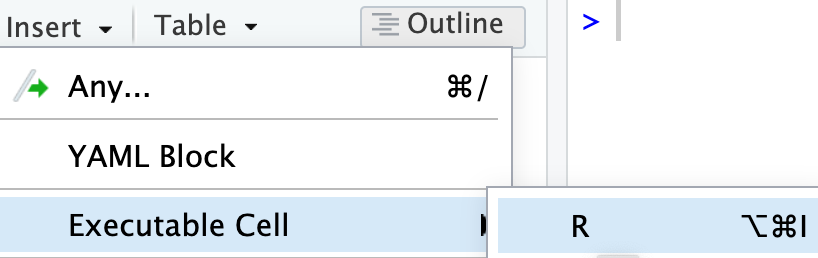

y <- 5
yR4: Quarto Continued
Week 1
Recall our Quarto document from last class
3 types of Quarto content
- Text, lists, images, tables, links
- Code chunks
- YAML metadata
Formatting text
bold, italics, superscripts & subscripts,
strikethrough,verbatim, etc.
Text is formatted through a markup language called
Markdown(Wikipedia)- Other markup languages include html (webapges) and LaTeX (math)
- All text formatting is specified via code
- “Markdown is a plain text format that is designed to be easy to write, and, even more importantly, easy to read” 1
Newer versions of RStudio include a
Visual editoras well that makes formatting text similar to using a word processor.
Formatting text: Visual editor
- Using the
Visual editoris similar to using a wordprocessor, such as Word - Keyboard shortcuts usually work as well (shown for Mac below)

Practice
- Part 1
- Using the visual editor, practice formatting text in your qmd file, such as making text bold, italicized, and in
codeformat. - Add 1st, 2nd, and 3rd level headers
- Add a list with a
- sub-list (bullet and/or numbered)
- Add a table
- Add whatever else you are interested in!
- Using the visual editor, practice formatting text in your qmd file, such as making text bold, italicized, and in
- Part 2
- Switch back to the
Sourceeditor and examine the markdown code that was used for the formatting.
- Switch back to the
Questions:
- What went smoothly?
- What hurdles did you encounter?
Formatting text: Markdown
| Markdown: | Output: |
|---|---|
|
This text is in italics, but so is this text. |
|
Bold also has 2 options |
|
|
|
Needsuper orsub scripts? |
|
Code is often formatted as verbatim |
|
|
Headers
- Organize your documents using headers to create sections and subsections
- Use
#at the beginning of the line to create headers
Text in editor:
Output:

Important
Make sure there is no space before the #, and there IS a space after the # in order for the header to work properly.
RStudio tip
You can easily navigate through your .qmd file if you use headers to outline your text
3 types of Quarto content
- Text, lists, images, tables, links
- Code chunks
- YAML metadata
Code chunks
.qmd file 
html output

Create a code chunk
3 options to create a code chunk
Click on
 at top right of the editor window, or
at top right of the editor window, orKeyboard shortcut
| Mac | Command + Option + I |
| PC | Ctrl + Alt + I |
Visual editor: SelectInsert->Executable Cell->R

What does a code chunk look like?
An empty code chunk looks like this:
Visual editor

Source editor

Important
Note that a code chunks start with ```{r} and ends with ```. Make sure there is no space before ```.
Enter and run code (1/n)
- Type R code inside code chunks
- Select code you want to run, by
- placing the cursor in the line of code you want to run,
- or highlighting the code you want to run
- Run selected code by
- clicking on the
 button in the top right corner of the scripting window and choosing
button in the top right corner of the scripting window and choosing Run Selected Line(s), - or typing one of the following key combinations:
- clicking on the
| Mac | ctrl + return |
| PC | command + return |
- Where does the output appear?

Enter and run code (2/n)
- Run all code in a chunk by
- by clicking the play button in the top right corner of the chunk
- The code output appears below the code chunk
Note
- The output should also appear in the Console.
- Settings can be changed so that the output appears only in the Console and not below the code chunk:
- Select (to right of Render button) and then Chunk Output in Console.
Useful keyboard shortcuts
Full list of keyboard shortcuts
| action | mac | windows/linux |
|---|---|---|
| Run code in qmd (or script) | cmd + enter | ctrl + enter |
<- |
option + - | alt + - |
| interrupt currently running command | esc | esc |
| in console, retrieve previously run code | up/down | up/down |
| keyboard shortcut help | option + shift + k | alt + shift + k |
Practice
Try typing code below in your qmd (with shortcut) and evaluating it:
3 types of Quarto content
- Text, lists, images, tables, links
- Code chunks
- YAML metadata
YAML metadata
Many output options can be set in the YAML metadata, which is the first set of code in the file starting and ending with ---.
- It sets the configuration specifications for the output file
- YAML is an acronym for
- yet another markup language, or
- YAML ain’t markup language
Simple YAML example
- The default YAML includes a title and author that appear at the top of the output file. In the example below, I also added in a date option
YAML:
---
title: "My first Quarto file"
author: "Meike"
date: "9/25/2023"
format: html
editor: visual
---Output:

Important
- The YAML must start and end with 3 dashes
---. - The first set of
---must be on the very first line.
Change the output file type
- The YAML specifies the format of the output file:
- html, Word, pdf, slides, website, book, etc.
- This is done by changing the
format:option

---
title: "My first Quarto file"
author: "Meike"
date: "9/25/2023"
format: html
editor: visual
---| Output format | YAML |
|---|---|
| html | format: html |
| Word | format: docx |
| pdf2 | format: pdf |
| html slides | format: revealjs |
| PPT slides | format: pptx |

You WILL get frustrated while learning R!
From Garrett Grolemund’s Prologue of his book Hands-On Programming with R3:
As you learn to program, you are going to get frustrated. You are learning a new language, and it will take time to become fluent. But frustration is not just natural, it’s actually a positive sign that you should watch for. Frustration is your brain’s way of being lazy; it’s trying to get you to quit and go do something easy or fun. If you want to get physically fitter, you need to push your body even though it complains. If you want to get better at programming, you’ll need to push your brain. Recognize when you get frustrated and see it as a good thing: you’re now stretching yourself. Push yourself a little further every day, and you’ll soon be a confident programmer.
Resources
- Official Quarto guide: https://quarto.org/docs/guide/
- Markdown basics: https://quarto.org/docs/authoring/markdown-basics.html
- Text formatting, headings, linnks, images, lists, tables, equations, diagrams, page breaks, keyboard shortcuts, and more!
- Code blocks: https://quarto.org/docs/computations/r.html#code-blocks
- Chunk options: https://quarto.org/docs/computations/r.html#chunk-options
- Markdown basics: https://quarto.org/docs/authoring/markdown-basics.html
- Mine Çetinkaya-Rundel’s Quarto tip a day: https://mine-cetinkaya-rundel.github.io/quarto-tip-a-day/
- Hadley Wickham’s R for Data Science: https://r4ds.hadley.nz/ _ See Chapter 29 for Quarto
R Packages

R Packages
A good analogy for R packages is that they
are like apps you can download onto a mobile phone:

Installing packages
- Packages contain additional functions and data
Two options to install packages:
install.packages()or- The “Packages” tab in Files/Plots/Packages/Help/Viewer window
install.packages("dplyr") # only do this ONCE, use quotes- Only install packages once (unless you want to update them)
- Installed from Comprehensive R Archive Network (CRAN) = package mothership

Video on installing packages
- Danielle Navarro’s YouTube video on Installing and loading R packages: https://www.youtube.com/watch?v=kpHZVyDvEhQ
Load packages with library() command
- Tip: at the top of your Rmd file, create a chunk that loads all of the R packages you want to use in that file.
- Use the
library()command to load each required package. - Packages need to be reloaded every time you open Rstudio.
library(dplyr) # run this every time you open Rstudio
Attaching package: 'dplyr'The following objects are masked from 'package:stats':
filter, lagThe following objects are masked from 'package:base':
intersect, setdiff, setequal, union- You can use a function without loading the package with
PackageName::CommandName
dplyr::arrange(iris, Petal.Width) # what does arrange do? Sepal.Length Sepal.Width Petal.Length Petal.Width Species
1 4.9 3.1 1.5 0.1 setosa
2 4.8 3.0 1.4 0.1 setosa
3 4.3 3.0 1.1 0.1 setosa
4 5.2 4.1 1.5 0.1 setosa
5 4.9 3.6 1.4 0.1 setosa
6 5.1 3.5 1.4 0.2 setosa
7 4.9 3.0 1.4 0.2 setosa
8 4.7 3.2 1.3 0.2 setosa
9 4.6 3.1 1.5 0.2 setosa
10 5.0 3.6 1.4 0.2 setosa
11 5.0 3.4 1.5 0.2 setosa
12 4.4 2.9 1.4 0.2 setosa
13 5.4 3.7 1.5 0.2 setosa
14 4.8 3.4 1.6 0.2 setosa
15 5.8 4.0 1.2 0.2 setosa
16 5.4 3.4 1.7 0.2 setosa
17 4.6 3.6 1.0 0.2 setosa
18 4.8 3.4 1.9 0.2 setosa
19 5.0 3.0 1.6 0.2 setosa
20 5.2 3.5 1.5 0.2 setosa
21 5.2 3.4 1.4 0.2 setosa
22 4.7 3.2 1.6 0.2 setosa
23 4.8 3.1 1.6 0.2 setosa
24 5.5 4.2 1.4 0.2 setosa
25 4.9 3.1 1.5 0.2 setosa
26 5.0 3.2 1.2 0.2 setosa
27 5.5 3.5 1.3 0.2 setosa
28 4.4 3.0 1.3 0.2 setosa
29 5.1 3.4 1.5 0.2 setosa
30 4.4 3.2 1.3 0.2 setosa
31 5.1 3.8 1.6 0.2 setosa
32 4.6 3.2 1.4 0.2 setosa
33 5.3 3.7 1.5 0.2 setosa
34 5.0 3.3 1.4 0.2 setosa
35 4.6 3.4 1.4 0.3 setosa
36 5.1 3.5 1.4 0.3 setosa
37 5.7 3.8 1.7 0.3 setosa
38 5.1 3.8 1.5 0.3 setosa
39 5.0 3.5 1.3 0.3 setosa
40 4.5 2.3 1.3 0.3 setosa
41 4.8 3.0 1.4 0.3 setosa
42 5.4 3.9 1.7 0.4 setosa
43 5.7 4.4 1.5 0.4 setosa
44 5.4 3.9 1.3 0.4 setosa
45 5.1 3.7 1.5 0.4 setosa
46 5.0 3.4 1.6 0.4 setosa
47 5.4 3.4 1.5 0.4 setosa
48 5.1 3.8 1.9 0.4 setosa
49 5.1 3.3 1.7 0.5 setosa
50 5.0 3.5 1.6 0.6 setosa
51 4.9 2.4 3.3 1.0 versicolor
52 5.0 2.0 3.5 1.0 versicolor
53 6.0 2.2 4.0 1.0 versicolor
54 5.8 2.7 4.1 1.0 versicolor
55 5.7 2.6 3.5 1.0 versicolor
56 5.5 2.4 3.7 1.0 versicolor
57 5.0 2.3 3.3 1.0 versicolor
58 5.6 2.5 3.9 1.1 versicolor
59 5.5 2.4 3.8 1.1 versicolor
60 5.1 2.5 3.0 1.1 versicolor
61 6.1 2.8 4.7 1.2 versicolor
62 5.8 2.7 3.9 1.2 versicolor
63 5.5 2.6 4.4 1.2 versicolor
64 5.8 2.6 4.0 1.2 versicolor
65 5.7 3.0 4.2 1.2 versicolor
66 5.5 2.3 4.0 1.3 versicolor
67 5.7 2.8 4.5 1.3 versicolor
68 6.6 2.9 4.6 1.3 versicolor
69 5.6 2.9 3.6 1.3 versicolor
70 6.1 2.8 4.0 1.3 versicolor
71 6.4 2.9 4.3 1.3 versicolor
72 6.3 2.3 4.4 1.3 versicolor
73 5.6 3.0 4.1 1.3 versicolor
74 5.5 2.5 4.0 1.3 versicolor
75 5.6 2.7 4.2 1.3 versicolor
76 5.7 2.9 4.2 1.3 versicolor
77 6.2 2.9 4.3 1.3 versicolor
78 5.7 2.8 4.1 1.3 versicolor
79 7.0 3.2 4.7 1.4 versicolor
80 5.2 2.7 3.9 1.4 versicolor
81 6.1 2.9 4.7 1.4 versicolor
82 6.7 3.1 4.4 1.4 versicolor
83 6.6 3.0 4.4 1.4 versicolor
84 6.8 2.8 4.8 1.4 versicolor
85 6.1 3.0 4.6 1.4 versicolor
86 6.1 2.6 5.6 1.4 virginica
87 6.4 3.2 4.5 1.5 versicolor
88 6.9 3.1 4.9 1.5 versicolor
89 6.5 2.8 4.6 1.5 versicolor
90 5.9 3.0 4.2 1.5 versicolor
91 5.6 3.0 4.5 1.5 versicolor
92 6.2 2.2 4.5 1.5 versicolor
93 6.3 2.5 4.9 1.5 versicolor
94 6.0 2.9 4.5 1.5 versicolor
95 5.4 3.0 4.5 1.5 versicolor
96 6.7 3.1 4.7 1.5 versicolor
97 6.0 2.2 5.0 1.5 virginica
98 6.3 2.8 5.1 1.5 virginica
99 6.3 3.3 4.7 1.6 versicolor
100 6.0 2.7 5.1 1.6 versicolor
101 6.0 3.4 4.5 1.6 versicolor
102 7.2 3.0 5.8 1.6 virginica
103 6.7 3.0 5.0 1.7 versicolor
104 4.9 2.5 4.5 1.7 virginica
105 5.9 3.2 4.8 1.8 versicolor
106 6.3 2.9 5.6 1.8 virginica
107 7.3 2.9 6.3 1.8 virginica
108 6.7 2.5 5.8 1.8 virginica
109 6.5 3.0 5.5 1.8 virginica
110 6.3 2.7 4.9 1.8 virginica
111 7.2 3.2 6.0 1.8 virginica
112 6.2 2.8 4.8 1.8 virginica
113 6.1 3.0 4.9 1.8 virginica
114 6.4 3.1 5.5 1.8 virginica
115 6.0 3.0 4.8 1.8 virginica
116 5.9 3.0 5.1 1.8 virginica
117 5.8 2.7 5.1 1.9 virginica
118 6.4 2.7 5.3 1.9 virginica
119 7.4 2.8 6.1 1.9 virginica
120 5.8 2.7 5.1 1.9 virginica
121 6.3 2.5 5.0 1.9 virginica
122 6.5 3.2 5.1 2.0 virginica
123 5.7 2.5 5.0 2.0 virginica
124 5.6 2.8 4.9 2.0 virginica
125 7.7 2.8 6.7 2.0 virginica
126 7.9 3.8 6.4 2.0 virginica
127 6.5 3.0 5.2 2.0 virginica
128 7.1 3.0 5.9 2.1 virginica
129 7.6 3.0 6.6 2.1 virginica
130 6.8 3.0 5.5 2.1 virginica
131 6.7 3.3 5.7 2.1 virginica
132 6.4 2.8 5.6 2.1 virginica
133 6.9 3.1 5.4 2.1 virginica
134 6.5 3.0 5.8 2.2 virginica
135 7.7 3.8 6.7 2.2 virginica
136 6.4 2.8 5.6 2.2 virginica
137 6.4 3.2 5.3 2.3 virginica
138 7.7 2.6 6.9 2.3 virginica
139 6.9 3.2 5.7 2.3 virginica
140 7.7 3.0 6.1 2.3 virginica
141 6.9 3.1 5.1 2.3 virginica
142 6.8 3.2 5.9 2.3 virginica
143 6.7 3.0 5.2 2.3 virginica
144 6.2 3.4 5.4 2.3 virginica
145 5.8 2.8 5.1 2.4 virginica
146 6.3 3.4 5.6 2.4 virginica
147 6.7 3.1 5.6 2.4 virginica
148 6.3 3.3 6.0 2.5 virginica
149 7.2 3.6 6.1 2.5 virginica
150 6.7 3.3 5.7 2.5 virginicaInstall the packages listed below before Day 3
knitr- this might actually already be installed
- check your packages list
tidyverse- this is actually a bundle of packages
- Warning: it will take a while to install!!!
- see more info at https://tidyverse.tidyverse.org/
rstatix- for summary statistics of a dataset
janitor- for cleaning and exploring data
ggridges- for creating ridgeline plots
devtools- used to create R packages
- for our purposes, needed to install some packages
oi_biostat_data- this package is on github
- see the next slide for directions on how to install
oi_biostat_data
Directions for installing package oibiostat
- The textbook’s datasets are in the R package
oibiostat - Explanation of code below
- Installation of
oibiostatpackage requires first installingdevtoolspackage - The code
devtools::install_github()tells R to use the commandinstall_github()from thedevtoolspackage without loading the entire package and all of its commands (whichlibrary(devtools)would do).
- Installation of
install.packages("devtools")
devtools::install_github("OI-Biostat/oi_biostat_data", force = TRUE)- After running the code above, put
#in front of the commands so that RStudio doesn’t evaluate them when rendering. - Now load the
oibiostatpackage- the code below needs to be run every time you restart R or knit an Rmd file
library(oibiostat)A visual dataset
Compare water sources across the world by country and family income
Check out Gapminder’s Dollar Street for many more examples: https://www.gapminder.org/dollar-street
Useful keyboard shortcuts
Full list of keyboard shortcuts
| action | mac | windows/linux |
|---|---|---|
| Run code in qmd (or script) | cmd + enter | ctrl + enter |
<- |
option + - | alt + - |
| interrupt currently running command | esc | esc |
| in console, retrieve previously run code | up/down | up/down |
| keyboard shortcut help | option + shift + k | alt + shift + k |
Practice
Try typing code below in your qmd (with shortcut) and evaluating it:
y <- 5
yAnother resource for an introduction to R
If you would like another perspective on what we covered the first week, you might find Danielle Navarro’s online book Learning Statistics with R to be helpful.
Download free pdf: https://learningstatisticswithr.com/
See Sections 3.1-3.7.1 for some of the topics we covered on first day
Footnotes
From Quarto’s Markdown Basics webpage, https://quarto.org/docs/authoring/markdown-basics.html↩︎
requires LaTeX installation↩︎
Grolemund, Garrett. 2014. Hands-on Programming with R. O’Reilly. https://rstudio-education.github.io/hopr/↩︎